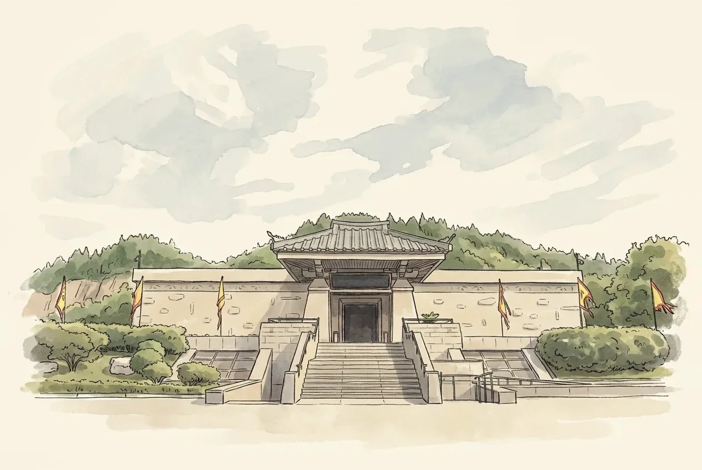
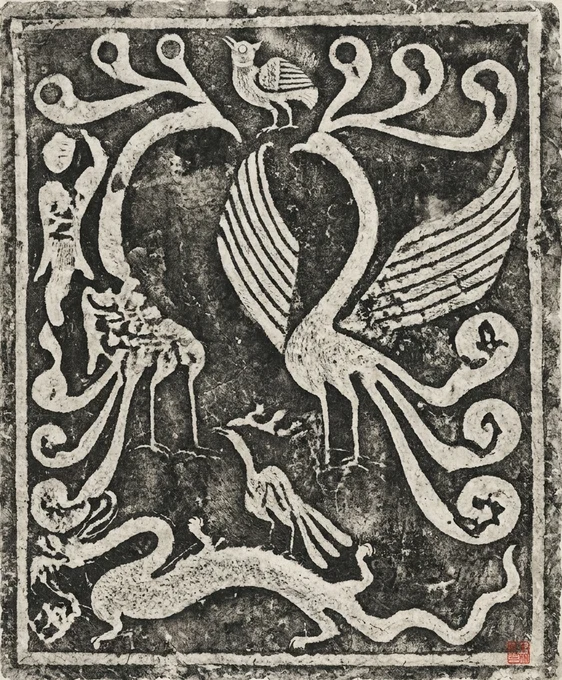

「暮夜黛墨 · 暗琉璃」
沉浸式数字博物馆设计规范
深度对标 IZANAMI × SAKAZUKI 国际策展级审美：以取自 17 幅暗夜原画夜空的暮夜黛墨（#12151C）与月雾空气光场为沉浸底色，结合 4 阶半透明宣白光字、烟熏暗琉璃磨砂与古泥金（#D4B475）构建通透呼吸感，并支持顶栏一键切换「玄夜暗馆 / 素宣白昼」双主题原画体系。
品牌标识系统 · Brand Identity
数字端主导航遵循国际策展极简原则，采用宽字距衬线纯字标「汉韵彭城」；印章纹样仅作为传统落款归档于明信片与文创延展，取形于汉代官印「方正浑厚、田字界格」特征。
印章标志制图与安全留白 (Clear Space)
最小使用尺寸：数字端 ≥ 24×24 px，印刷/展板 ≥ 10×10 mm；四边保留 0.25 倍印宽净空区。
标准横版 / 竖版组合制式 (Lockups)
竖版：用于明信片落款、加载开卷与手机端封面。
汉漆深色沉浸应用 (Dark Mode)
色彩系统 · Color System
严格执行 65% 纸本底色 / 25% 焦墨层次 / 10% 朱砂石青点睛配比；仅在「03 汉代三绝」引入汉漆黑金沉浸段，形成节奏张力。
--ds-paper底色 · 主背景全站唯一页面底色，搭配 42% 极淡宣纸纤维噪点。
--ds-surface底色 · 卡片面装裱卡片、弹窗、路单面板与输入框表面色。
--ds-subtle底色 · 次级面次级标签底、画框衬底、拓印纸面底色。
--ds-ink墨色 · 主正文核心标题、主正文、细描边（对比度 > 12:1）。
--ds-ink-2墨色 · 次级文导语说明、正文段落、未选中导航项。
--ds-vermilion品牌主色方印标志、主按钮、核心亮点标、地铁 1 号线。
--ds-jade山水与状态故黄河水系、开放中状态、官方原典、地铁 3 号线。
--ds-indigo国风数据色低饱和矿物蓝，用于地铁 2 号线与交通标签。
--ds-lacquer沉浸段底色仅用于「汉代三绝」漆器沉浸段与地宫提灯体验。
--ds-gold沉浸段点缀汉漆区编号章、细回纹边栏与古籍引文高亮。
字体层级与空间栅格 · Typography & Grid
全站仅用「定制衬线 XZSerif（文化叙事）」与「系统无衬线（功能导览）」双字体族，配合 4 级收敛圆角与 12 列栅格，根治碎片杂乱感。
6 级字阶体系 · Typography Scale
锐利画幅与几何规制 · Editorial Geometry (0px 去模板化)
所有插画 / 网格 / 路引
印章标志 / 章节序号
替代厚重卡片与阴影
定制光标 · 入画 / 拓印
12 列桌面栅格 · Layout Grid (Max 1200px / Gutter 24px)
• 桌面端版心 1200px，板块上下呼吸留白统一 96px，卡片网格间距 24px。
• 移动端（≤720px）切换单列/双列流式布局，页边距 16px，底部常驻汉风双色 TabBar。
辅助图形与图标系统 · Motifs & Icons
收敛繁杂背景底纹，仅保留「汉代云气纹」与「画像石菱格回纹」两套辅助图形；结合 9 处景点专属白描纹样与 12 枚汉风双色线性图标。
辅助图形 A · 汉代云气纹（浅色留白轻装饰，透明度 8%–12%）
辅助图形 B · 汉画像石菱格纹（仅限三绝沉浸边栏与拓本画框）
九处彭城专属景点白描纹样 · Site Motifs
汉风双色线性图标系统 · Iconography (24×24 Grid / 1.6px Stroke / Round Cap)
核心 UI 组件库 · Components
将零散样式抽象为「装裱卡片、功能按钮、筛选胶囊、三级可信度徽章、文旅车票路单」五大标准组件族。
按钮与筛选态 · Buttons & Chips
开放状态与亮点微标 · Status & Feature Badges
三级史料可信度溯源体系 · Source Credibility Badges
地铁矿物色图例 · Transit Mineral Palette
标准「书画装裱」景点卡片解剖 · Card Anatomy

龟山汉墓
凿山为藏的楚王地宫
素笺衬底 + 10px 装裱留白 + 6px 内画框 + 外露交互微标，彻底消除通用模板感。
双 IP 角色设计规范 · IP System
源自徐州博物馆藏东汉《朱雀行龙》画像石“四神”母题，提炼为朱雀（南方·导览领路）与白虎（西方·文化讲解）双角色，以统一宣纸圆章框融入界面。
文化原型推导 · Prototype Derivation

白虎（素白系）：文物典故解读、探墓陪伴、拓印引导。
核心情感表情矩阵（全套 24 枚 · 精选展示 8 枚）
 朱雀 · 领飞长卷巡航
朱雀 · 领飞长卷巡航多模态交互与体验闭环 · Interaction Highlights
围绕「游前规划 → 游中沉浸读史 → 游后钤印留念」构建五大文化互动触点，用一个动作记住一个两汉知识点。
彭城七里横向长卷
纵向滚动驱动 9 处地标横向展开，叠加故黄河水系、路线筛选高亮与朱雀随速飞行反馈。
入口：首页 01 长卷摄像头隔空手势拓印
纯本机帧差算法捕捉挥手轨迹化作拓包落点，支持全九景拓本生成与高清保存，隐私零上传。
入口：首页三绝 / 全九景详情龟山汉墓提灯走甬道
指针/指尖化作地宫灯火，在暗黑甬道中实时照亮石壁结构与历史铭文，还原地下宫殿震撼感。
入口：龟山汉墓详情页2.6× 玉衣放大镜
交互式光学放大镜与部位锚点联动，近距离研读 4248 片玉片与 1576 克金丝缀合工艺。
入口：徐州博物馆详情页钤印明信片与行程路单
Canvas 实时合成 1800×1200 带自定义寄语与印章的明信片；搭配顺路排序与实时高德导航。
入口：详情页顶部 / 05 交通